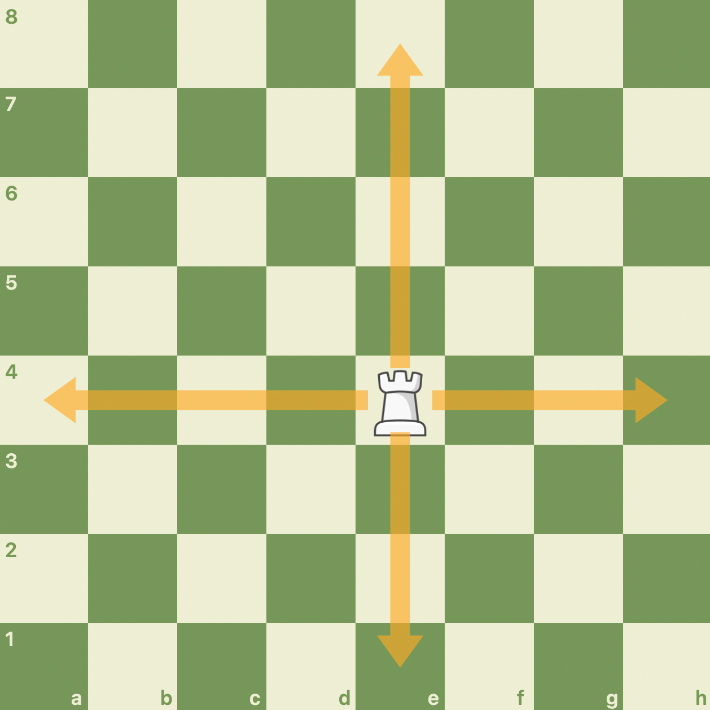

The straight travelers of the board, the ROOOKS!
The Rook is another piece that stands behind the pawns and must be uncovered to be "activated". However, it's development comes later on towards the middlegame stage, as the developmet of the knights/bishops comes first due to their easy accesibility, but it takes some time for one of the Rooks to have an open line of attack and gain some activity.
Nontheless, the Rook is indeed a very powerful piece that can shift the dimensions of a board merely through their activity potential. Although the Bishop and Rook are similar in how the control a certain "plane" of the board, the Rook is considered to be worth more and have more attacking potential, as the the two Rooks together can be coordinated together to create potent pressure and an attack, but it is quite hard to coordinate the two Rooks. One Rook is quite strong and can do damage, but not the same as two coordinated Rooks.
The Rook is able to move in any kind of straight line, which makes it inherently more powerful than the Bishop as it controls dark and light squares!
!
Because of the nature of the Rook's movement, it is difficult to develop early on, and therfore should be utilized in the middlegame, typically when files open for the Rook to gain control over and cause problems for the opponent.
Despite this, as mentioned before, Rooks become quite potent when they are properly coordinated, and this harmony can be achieved in a number of different ways, but the methods I will showcase are:
If you want to learn more about the Rook, watch this video by chess.com!
Or click on the link below!
Let's move on with the...
You might've wondered why the Rooks were called "brave", "What about the Knights?"
Well, this is why!